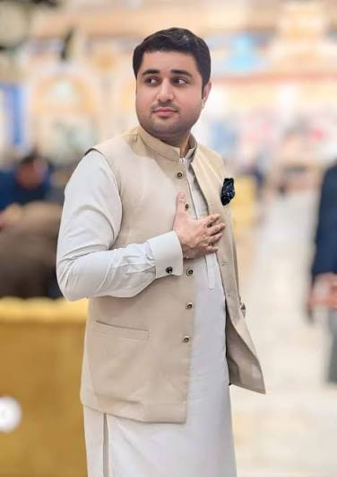
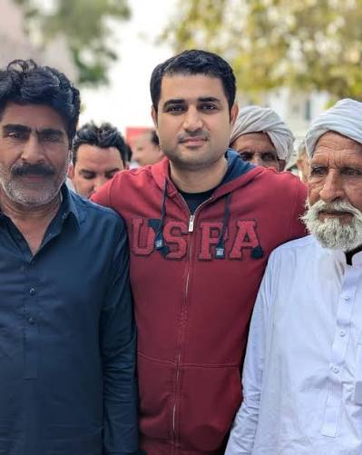
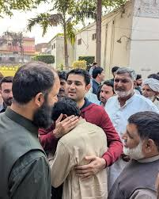

Public Presence
Active in Public Life
Community Engagement
Regularly present at community gatherings and constituency events, meeting local residents and party workers.
Political Circles
Seen at meetings with senior political figures, reflecting close ties to the family's political engagements.
Family Connections
Frequently photographed with family and elders at community events, underscoring strong local and family roots.
Photo Gallery
Moments & Appearances



Family